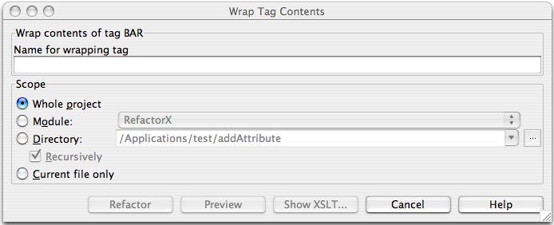

| Wrap Tag Contents Refactoring |
|
|
The Wrap Tag Contents refactoring allows you to wrap the contents of a set of XML tags in
newly
created tag.
If this refactoring is invoked, all tags matching the selected tag name
will have their contents wrapped. This bulk wrapping of tag contents may be useful as XML schemas evolve.
To wrap the contents of a tag, position the caret on the tag to wrap in the editor, right-click, and select the XML Refactorings| Wrap Tag Contents... menu item. The following dialog will appear:  1. Determine the name of the new tags which will wrap the contents of the selected tags. 2. Determine the scope of the wrapping. All tags matching name of the tag selected will be wrapped, if they are in the selected scope. Scopes available include the current file, the entire project, or a specified directory or module. Directory scopes can either include sub-directories, or not, based on whether the Recursively checkbox is selected. If the "Limit to files with DTD:..." checkbox is selected, the scope will be limited to those files with the same DOCTYPE as the current file. 3. Press Preview button to make IDEA to search for usages of the selected tag Find window. 4. Click OK to continue. If you do not select the Preview option, all usages will be changed immediately. Pressing Preview opens the Refactoring preview window displaying all found usages of the tags to be wrapped. In this window you can exclude/include usages you want to refactor. Pressing Show XSLT... opens the XSLT preview window displaying an small fragment of XSLT equivalent to the refactoring requested. This fragment can be used by XSLT processors to perform the requested refactoring on files external to your IDEA project. |
| The Refactoring preview window may appear anyway, if the files to be affected are read-only. |